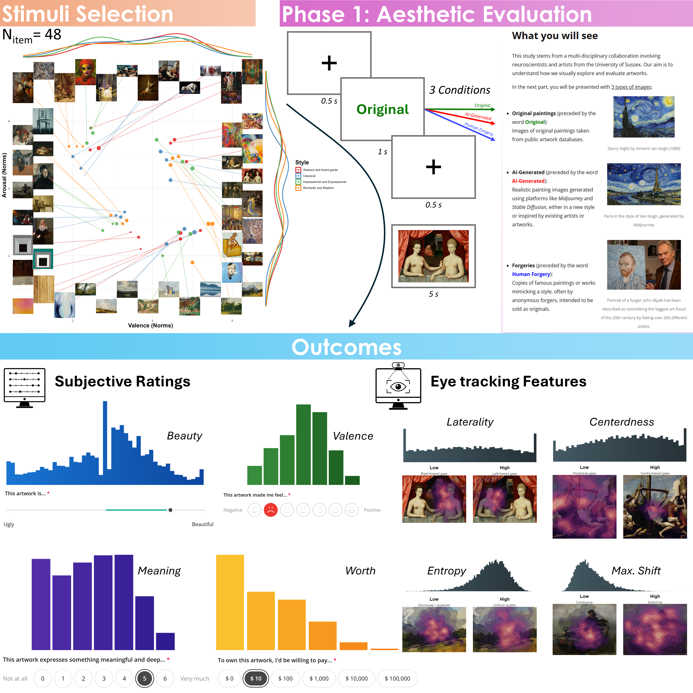

Not All Fakes Are Equally Ugly: Disentangling the role of Syntheticness and Authenticity Beliefs in Aesthetic Experience
Dominique Makowski1,2, Ana Neves1, Giulia Cabbai3, and Marco Sperduti4
1School of Psychology, University of Sussex
2Sussex Centre for Consciousness Science, University of Sussex
3UCL
4Department of Medicine, University of Tor Vergata
Author Note
Dominique Makowski  https://orcid.org/0000-0001-5375-9967
https://orcid.org/0000-0001-5375-9967
Ana Neves  https://orcid.org/0009-0006-0020-7599
https://orcid.org/0009-0006-0020-7599
Giulia Cabbai  https://orcid.org/
https://orcid.org/
Marco Sperduti  https://orcid.org/
https://orcid.org/
Author roles were classified using the Contributor Role Taxonomy (CRediT; https://credit.niso.org/) as follows: Dominique Makowski: project administration, data curation, formal analysis, investigation, visualization, writing – original draft, and writing – review & editing. Ana Neves: project administration and writing – review & editing. Marco Sperduti: project administration, writing – original draft, and writing – review & editing
Correspondence concerning this article should be addressed to Dominique Makowski, School of Psychology, University of Sussex, Brighton BN1 9RH, UK, Email: D.Makowski@sussex.ac.uk
Abstract
TODO
Keywords: TODO, TODO2
Not All Fakes Are Equally Ugly: Disentangling the role of Syntheticness and Authenticity Beliefs in Aesthetic Experience
In October 2018, Christie’s auctioned Portrait of Edmond de Belamy, an image produced by the French collective Obvious using a generative adversarial network, for over $400,000. Four years later, an image created with Midjourney by Jason Michael Allen won first prize in a digital art competition at the Colorado State Fair, triggering a public controversy about the legitimacy of algorithmically produced art. These two episodes crystallize a tension that runs through the psychology of art appreciation: artificial intelligence (AI) is now able to produce images that enter markets, competitions, and museums on apparently equal footing with human productions, yet the same public that grants AI this economic and cultural legitimacy tends to devalue its output as soon as its algorithmic origin is revealed. A growing body of empirical work has documented this negative bias against art attributed to AI across a wide range of materials and paradigms. The effect has been reported for visual art (Bellaiche et al., 2023; Chiarella et al., 2022; Di Dio et al., 2023; Gangadharbatla, 2022; Ragot et al., 2020) [TODO: Zhang et al., 2025 ?], for poetry and creative writing (Porter & Machery, 2024; Raj et al., 2023), for music (Ansani et al., 2025; Shank et al., 2022), and, with important cultural nuances, in cross-national comparisons of explicit and implicit attitudes (Wu et al., 2020). Raj et al. (2023) offer perhaps the most systematic demonstration of the phenomenon’s robustness: across sixteen preregistered experiments and more than 27,000 participants, disclosing that a piece of creative writing had been produced by AI systematically lowered evaluations of its quality, creativity, and enjoyability, an “AI disclosure penalty” that resisted a wide array of moderation strategies, including collaborative human–AI framing and the humanization of the AI agent. A recent meta-analysis by De Rooij (2025), focused specifically on visual art, confirms that this devaluation is not an isolated laboratory curiosity: the effect is broad, generalizes across studies, and is moderated by factors such as participants’ age, artistic style, the true source of the image, and the presentation context, but is consistently larger for judgments that require attributing meaning, intention, or depth to the artwork than for judgments of low-level sensory qualities.
This last observation already points toward the central puzzle that motivates the present work. If the bias were rooted in genuine perceptual differences between human and AI-generated images, it should scale with people’s ability to actually tell the two apart. Empirically, the opposite pattern is observed. In blind evaluation conditions, without any information about authorship, observers are typically unable to discriminate AI-generated from human-made images above chance level (Gangadharbatla, 2022; Ragot et al., 2020). Zhou and Kawabata (2023) directly tested this dissociation using a free-viewing and categorization paradigm: participants’ gaze behavior and subjective ratings of beauty, liking, valence, and arousal differed according to which paintings they believed to be human- or AI-made, yet their objective accuracy at identifying the true authorship of AI-generated representational paintings was poor. Porter and Machery (2024) report an analogous pattern for poetry: AI-generated poems were indistinguishable from human-written ones under blind evaluation, and in some conditions were even rated more favorably, before being devalued once their artificial origin was disclosed. The bias, in other words, does not track the observer’s actual capacity to detect an algorithmic signature in the stimulus. It tracks belief.
This dissociation between perceptual indistinguishability and post-disclosure devaluation suggests that the anti-AI bias is better understood as a high-level, cognitive phenomenon than as a perceptual one. Direct evidence for this claim comes from studies that manipulate processing mode while holding the stimulus constant. Chiarella et al. (2022), testing visitors in an actual art exhibition, manipulated the attribution of authorship of two identical abstract paintings and found that the aesthetic devaluation of the “AI” painting emerged only in explicit comparative judgment; concurrent psychophysiological measures of affective engagement (electrodermal activity, heart rate) showed no corresponding modulation, suggesting that early, implicit affective responses to the image were left largely intact. Wang et al. (2026) [TODO: this Pleasure-Interest Model / cognitive-load reference could not be located/verified in the literature; please confirm the citation or remove the claim], using the Pleasure–Interest Model of Aesthetic Liking, manipulated authorship labels on images that were in fact all AI-generated and orthogonally manipulated whether participants evaluated them under time pressure and cognitive load (favoring automatic, stimulus-driven processing) or under conditions that encouraged reflective, meaning-oriented engagement. The AI label reduced appreciation in both conditions, but the effect was roughly four times larger under controlled, reflective processing, and providing participants with brief interpretive descriptions of the artwork closed much of the gap by increasing interest rather than sensory pleasure. Converging evidence at the neural level comes from Zhang et al. (2025), who found that identical paintings labeled as human-made evoked greater activation of the right angular gyrus (a region implicated in semantic integration and episodic memory) than the same paintings labeled as AI-generated, and from Bara et al. (2025), whose work on implicit and explicit measures of moral and aesthetic judgment toward AI art suggests that the bias operates mainly at an explicit, deliberate, context-sensitive level rather than as an automatic affective association. Taken together, these findings converge on a single conclusion: the anti-AI bias is not primarily a failure of the visual system to find AI images pleasing, but a consequence of what the label “AI” does to the higher-order cognitive processes through which an observer constructs meaning, intention, and value around an aesthetic object.
This conclusion invites us to return to general cognitive models of aesthetic experience to ask where, exactly, in the chain of processing the label intervenes. In the influential model proposed by Leder et al. (2004) and updated by Leder and Nadal (2014), aesthetic experience unfolds through a sequence of stages moving from automatic to deliberate processing: perceptual analysis, implicit memory integration, explicit classification, cognitive mastering, and evaluation, culminating in two outputs, an aesthetic judgment and an aesthetic emotion. Two stages in this model are natural candidates for where an authorship label could exert its effect: memory integration, where formal features of the artwork are related to prior knowledge and expectations, and cognitive mastering, where the observer interprets the work in light of personal experience, biography, and expectations about the artist’s intention. If information about AI authorship is integrated at these stages, it should selectively depress judgments that depend on inferred intentionality, meaning, and personal connection, while leaving more perceptually driven components of the aesthetic response comparatively untouched—precisely the pattern documented above. On the basis of this framework, and of the literature reviewed so far, at least three candidate mechanisms emerge as plausible drivers of the anti-AI bias: attributed originality and authenticity, the affective properties of the stimulus itself, and the personal relevance of the artwork to the observer. Each of these mechanisms motivates a specific methodological choice in the present study.
Attributed originality and authenticity
The first candidate mechanism concerns the value historically attached to originals over copies. Newman and Bloom (2012), in a influential series of experiments, showed that people value original artworks over perceptually indistinguishable duplicates because of a principle of positive contagion: the original is believed to carry the physical and symbolic trace of the artist’s body, hand, and intention, a trace that a reproduction cannot carry. A neuroimaging study by Huang et al. (2011) offers striking physiological support for this idea: when the same Rembrandt portraits were labeled as “copy” rather than “authentic”, viewing evoked stronger activation in frontopolar cortex and right precuneus, and the correlation between these regions and occipital visual areas increased - consistent with participants actively engaging effortful, hypothesis-testing processes to look for evidence supporting the assigned label, regardless of whether the picture was in fact genuine or false. This shows that a mere verbal assignment of authenticity status is sufficient to reorganize the brain’s engagement with an image, independently of its physical properties. At the same time, a meta-analysis by Specker et al. (2023) on the related “genuineness effect” - the presumed superiority of experiencing a physical original over a reproduction - found that the effect largely disappears once the confound between genuineness and museum-versus-laboratory context is properly controlled, a result compatible with the facsimile accommodation hypothesis, according to which observers can “see past” the reproduction and respond to it much as they would to the original. This body of work is important for the present study because it suggests that authenticity-related devaluation is not an all-or-nothing effect of “real versus fake”, but is graded by what, specifically, the label communicates about the causal and intentional history of the object. Consistent with this graded view, Raj et al. (2023) show that the relation between AI disclosure and evaluative devaluation is itself mediated by shifts in perceived authenticity, further underscoring that the anti-AI bias and authenticity-related devaluation share a common underlying mechanism rather than being independent phenomena.
This distinction has a direct methodological consequence. Much of the AI-art literature has manipulated only a human-versus-AI authorship contrast (Bellaiche et al., 2023; Chamberlain et al., 2018; Gangadharbatla, 2022; Grassini & Koivisto, 2024; Ragot et al., 2020), which conflates two logically separable properties: not being an authentic original, and not being of human origin at all. A painting attributed to a human copyist is also not the artist’s original, yet it retains a human intentional history; a painting attributed to AI lacks both. Comparing only “human original” against “AI” therefore cannot determine whether devaluation reflects a generic non-originality penalty or a penalty specific to non-human authorship. Israfilzade (2020) further shows that titles and authorship labels can carry connotations beyond authenticity alone - in their study, an AI attribution increased perceived novelty of abstract paintings without affecting perceived complexity or ambiguity - underscoring that label effects are multidimensional and cannot be reduced to a single authenticity judgment. To disentangle these components, the present study manipulates the presumed authorship of a set of artworks that were, in every case, actually created by human artists, assigning each piece one of three labels: human original, human copy, or AI-generated. This copy condition, directly inspired by the authentic-versus-copy manipulation of Newman and Bloom (2012) and Huang et al. (2011), makes it possible to isolate a bias that is specific to the AI label from a more general non-originality penalty, and thereby to test directly whether the anti-AI bias reduces to an authenticity problem or constitutes something more specific to algorithmic authorship.
Affective response in aesthetic evaluation: valence and arousal and the interoceptive grounding of emotion
The second candidate mechanism concerns the affective properties of the artwork. Emotional processes occupy a central place in every stage-based model of aesthetic experience (Leder et al., 2004; Leder & Nadal, 2014), and a growing literature on “aesthetic emotions” treats the arousal and valence elicited by a stimulus as core, and partly independent, determinants of liking (Chiarella et al., 2022). Chiarella et al. (2022) used electrodermal activity and heart rate as converging but dissociable indices of this affective engagement, following the classical proposal that arousal is better indexed by skin conductance and valence by cardiac measures. Zhou and Kawabata (2023) explicitly incorporated separate ratings of emotional valence and arousal, alongside beauty, liking, familiarity, and concreteness, as core dependent measures in their study of AI-art perception, arguing that a bipolar pleasant–unpleasant scale is insufficient to capture the emotional texture of an aesthetic response, and found that these dimensions of affective response, like the beauty and liking ratings themselves, were similarly shaped by believed authorship rather than by the images’ true origin. In our own group’s related work, Salgues et al. (2024) showed that retrospective ratings of both the valence and the intensity of the emotional reaction to a painting reliably predicted judgments of beauty, indicating that affective response is not merely a byproduct of aesthetic judgment but one of its structuring inputs. Wu et al. (2020) similarly found that the degree to which a piece of art was perceived to “evoke emotion” shaped both explicit and implicit appraisals of authorship-attributed artworks, in ways that differed markedly between American and Chinese participants: American participants’ explicit appraisals were more strongly driven by perceived emotional evocation than those of Chinese participants, for whom implicit, evocation-linked associations played a comparatively larger role.
A growing body of work suggests that this affective dimension of aesthetic experience is not purely cognitive but is grounded, at least in part, in the perception of one’s own bodily state - that is, in interoception. Cabbai et al. (2023), combining physiological recordings with self-report, found that skin conductance response directly and positively predicted both liking and being-moved ratings for visual artworks, independently of art type, and that participants’ interoceptive accuracy (assessed via a heartbeat-counting task) and interoceptive sensibility (assessed via self-report) selectively modulated emotional-intensity ratings, particularly in response to representational art. Using a very different kind of stimulus, Washizu et al. (2025) mapped the bodily sensations that accompany the aesthetic evaluation of everyday photographs and found that higher beauty ratings were specifically associated with chest-centered bodily sensations, that beauty tracked high-valence emotion categories, and that self-reported interoceptive awareness - while not directly related to beauty ratings - was nonetheless related to the overall intensity of reported bodily sensations. In the domain of immersive, participatory art, Kühnapfel et al. (2023) similarly found that visitors’ bodily experience of an installation clustered into interpretable dimensions (including disturbance-related and interoceptive sensations such as heartbeat and breathing) that predicted artistic experience. The interoceptive cluster was specifically linked to interest. Together, these findings indicate that the affective response an artwork elicits is partly constituted by, or at least reliably co-occurs with, the observer’s felt bodily state, and that stable individual differences in how people attend to and report on that bodily state, can possibly modulate aesthetic experience.
Because affective response appears to be a driver of aesthetic appreciation, it is essential to control for it directly when comparing labeled conditions, otherwise, apparent “authorship effects” could in fact be confounded with pre-existing differences in the emotional profile of the stimuli themselves. For this reason, in the present study, we select stimuli that drawn from a standardized set of paintings with normative subjective ratings, so as to sample systematically across the affective space defined by valence and arousal. This design choice allows us to enter normative valence and arousal directly as predictors alongside the manipulated authorship label, and to ask whether affective properties modulate the anti-AI bias.
The evidence that emotional responses to art are partly embodied and interoceptively grounded also motivates a further, exploratory component of the present design. If, as Cabbai et al. (2023) and Washizu et al. (2025) suggest, individual differences in interoceptive sensibility shape how strongly bodily and affective signals feed into aesthetic evaluation, then such differences could plausibly also shape sensitivity to the anti-AI bias itself. On one hand, individuals who are more attuned to their own bodily and affective reactions might rely more heavily on this immediate, embodied signal when judging an artwork, and correspondingly less on the more abstract, belief-based inference triggered by an authorship label. This would predict a weaker label effect for participants high in interoceptive sensibility. On the other hand, insofar as interoceptive sensibility indexes a more general responsiveness to internally generated meaning, it could instead amplify the evaluative gap between conditions that succeed versus fail at engaging this internal resonance. Because the existing literature does not adjudicate between these possibilities, and because no study to date has examined interoceptive sensibility in the specific context of authorship-based bias, we include a brief, validated self-report measure of interoceptive sensibility in the present study and treat its relationship to both aesthetic judgment and the magnitude of the label effect as an exploratory question.
Self-relevance as a candidate mechanism of resonance
The third candidate mechanism is self-relevance: the degree to which an artwork connects to the observer’s own autobiographical memories, identity, interests, and lived experience. The centrality of this dimension in aesthetic experience is well established independently of any question about AI. Vessel et al. (2012) earlier neuroimaging work had already shown that the most intensely moving aesthetic experiences recruit the brain’s default mode network, a system associated with autobiographical memory, self-referential thought, and internally directed cognition (Martinelli et al., 2013). Building on this tradition, Lee et al. (2023) exploited the self-reference effect in memory - the well-established finding that information encoded with reference to the self is subsequently better remembered than information encoded semantically or with reference to another person - as an implicit, objective index of aesthetic engagement: paintings that received extreme aesthetic judgments were remembered as well as paintings that had been explicitly encoded in a self-referential judgment task, suggesting that aesthetic judgment and self-referential processing draw on shared cognitive resources. Salgues et al. (2024) refined this result across two studies and showed that the mnemonic advantage conferred by aesthetic judgment is closely tied to both self-relevance and explicit emotional judgment, proposing that the perception of self-relevance may act as a switch that jointly triggers emotional engagement and memory integration, ultimately shaping the aesthetic judgment itself. Smith et al. (2025) provide complementary evidence that the spontaneous recollection of autobiographical memories during art viewing directly increases aesthetic appreciation, while Durkin et al. (2023), drawing on the art-historical concept of the “Beholder’s Share”, show that abstract artworks elicit greater interindividual variability in both verbal interpretation and default-mode network activity than figurative artworks - evidence that the subjectivity of aesthetic experience is grounded in how observers mobilize internal, autobiographically structured representations rather than in low-level perceptual differences between images.
Most directly relevant to the present study is the work of Vessel et al. (2023), who showed that self-relevance predicts aesthetic appreciation not only for real artworks but also for synthetic images generated through neural style transfer, provided that these images are built around content that is autobiographically meaningful to the individual viewer: personalized synthetic artworks, constructed from photographs tied to each participant’s own memories, places, and identity, were rated as aesthetically appealing as genuine human artworks, and considerably more so than synthetic images personalized for someone else. This result is important because it demonstrates that an algorithmically generated image can produce a full-quality aesthetic experience when its content, rather than its authorship, is calibrated to the observer’s autobiography. It raises the natural question, central to the present study, of whether self-relevance can similarly attenuate or eliminate the anti-AI bias when the manipulation concerns not the content of the image but only the label attached to it. This is why, in the second phase of our design, we directly measure participants’ self-relevance judgments for each artwork, in order to test whether the label effect is moderated by, or interacts with, the degree to which an artwork resonates personally with the observer, and whether very high levels of self-relevance are associated with an attenuation of the gap between human- and AI-labeled artworks.
Does the bias persist? The question of durability over time
A question that has received comparatively little empirical attention concerns what happens to the anti-AI bias once the misleading information about authorship is corrected, and whether any residual effect can be detected after a substantial delay. Several independent lines of reasoning motivate treating this as a central, if exploratory, research question in the present study. First, models of belief-based valuation such as Newman and Bloom (2012) contagion account, and the facsimile accommodation hypothesis discussed by Specker et al. (2023), describe the value attached to an object as resulting from an inferred causal-intentional history rather than from its directly observable properties; there is no a priori guarantee that correcting a factual belief about that history (“this was actually made by a human”) fully erases the representation that had been built around the original, false belief, particularly once the specific source of that belief has been forgotten. Second, the neuroimaging results of Huang et al. (2011) show that an authenticity label engages active, effortful hypothesis-testing and evidence-seeking processes rather than a passive updating of a simple prior; such elaborated, self-generated inferential processes are, in general, more resistant to correction than passively acquired beliefs, since forgetting the original source of a belief does not automatically remove the belief itself - a pattern well documented in the broader literature on source memory and belief perseverance [TODO: add some ref?], and one that maps naturally onto our design, in which participants’ explicit memory for the original labels can be assessed independently of their evaluative judgments. Third, Rooij (2025) meta-analysis shows that the anti-AI bias is sensitive to a range of contextual moderators, which suggests that the initial labeling context can leave a lasting imprint on how a given artwork is subsequently processed, above and beyond the immediate presence or absence of the disclosure. Finally, from an applied standpoint, understanding whether an initial “AI” framing produces a durable evaluative trace, even once corrected, has direct implications for how disclosure and correction policies around AI-generated content should be designed and evaluated - an issue that is likely to grow only more pressing as generative systems become more capable and more widely used to produce cultural content.
For these reasons, our design incorporates a second phase in which participants who took part in the initial labeling study are invited back, after a substantial delay, to re-evaluate the same artworks - now correctly informed that all of them were, in fact, human productions. This second phase allows us to ask, exploratorily, two related questions: whether the evaluative difference induced by the original label persists once the correct information has been provided, and whether any such persistence is related to, or independent of, participants’ explicit memory for the label that had originally been assigned to each artwork. Should the bias persist despite explicit correction and despite weak source memory, this would suggest that the initial framing of an artwork as AI-generated can leave a durable evaluative trace on the observer’s relationship to that specific work, bringing the anti-AI bias conceptually closer to more general phenomena of belief perseverance, misattribution, and evaluative conditioning than to a purely inferential, on-line judgment that should dissolve as soon as the triggering information is withdrawn.
The present study
Building on this theoretical and empirical background, the present study addresses four research questions. First, is the anti-AI bias reducible to a general authenticity or non-originality penalty, or does it reflect something specific to the attribution of algorithmic authorship, once a human-copy condition is included alongside human-original and AI conditions? Second, to what extent do the affective properties of the artwork - its normative valence and arousal - account for aesthetic judgments independently of the attributed authorship label? Third, is the anti-AI bias moderated by the personal relevance of the artwork to the observer, such that high self-relevance narrows or eliminates the gap between human- and AI-labeled artworks? And fourth, does any label-induced bias in aesthetic judgment persist once participants are informed, after a delay, that all artworks were in fact of human origin, and how does this persistence relate to participants’ explicit memory for the original labels? Addressing these questions jointly allows us to move beyond a simple documentation of the anti-AI bias toward an account of the specific cognitive mechanisms that structure it, and toward an initial empirical characterization of its durability over time.
Methods
Participants
Participants were recruited via Prolific (n = 360). Following our preregistered criteria, 36 participants (11.1%) who failed at least half of the label catch trials were excluded, leaving a final sample of 324 participants (169 women, 153 men, 2 other; age M = 42.1, SD = 12.9, range 20–82), mostly residing in the United Kingdom (74%) and the United States (21%). Data from participants who failed the attention check embedded in a given questionnaire were discarded for that questionnaire only (MINT and VVIQ: n = 23; BAIT: n = 25). Stimuli ratings were additionally discarded for 7 participants who rated every image identically or whose response pattern was characteristic of a misunderstanding of the instructions. A subset of 220 participants completed the follow-up memory task, on average 47 days later (SD = 4.4, range 36–58). The study was approved by the University of Sussex ethics committee [APPLICATION NUMBER TODO].
Procedure
Figure 1
TODO.

The experiment was implemented with JsPsych (De Leeuw, 2015) and all materials, including its code, the items, instructions and exact procedure, is available in open-access at https://github.com/RealityBending/FakeArt, where the experiment can also be tested live.
Aesthetic Judgment (Phase 1)
Participants were first introduced to a cover story framing the experiment as a collaboration between neuroscientists and artists investigating how people visually explore and evaluate artworks (a framing that also justified the use of webcam-based eye-tracking). They were told they would view three categories of images: Original Human paintings (sourced from public art databases), AI-Generated images (produced using generative platforms such as Midjourney and Stable Diffusion, either in a new style or inspired by existing artists or artworks1), and Human Forgeries (copies or stylistic imitations of existing artworks, historically produced by Humans with intent to deceive). Critically, only the participants’ beliefs were manipulated - all stimuli were, in reality, genuine man-made artworks.
Stimuli from the Vienna Art Picture System (VAPS, Fekete et al., 2023) were first grouped into four broad stylistic categories (Abstract and Avant-garde; Impressionist and Expressionist; Romantic and Realism; and Classical). To minimize the influence of prior exposure, only unfamiliar paintings (familiarity ratings below the sample median) were retained. Within each style, the remaining paintings were stratified into four quadrants defined by the upper and lower tertiles of normative arousal and valence, and the three paintings farthest from the style’s median arousal/valence were selected from each quadrant. This procedure yielded a final set of 48 paintings - 12 per style, evenly split across the four arousal-valence quadrants (Positive - High Intensity; Positive - Low Intenstiy; Negative - High Intensity, Negative - Low Intensity).
During the first phase of the experiment, participants viewed the 48 artworks (see Figure 1), each preceded by a randomly presented label indicating its purported type (“Original”, “Human Forgery” or “AI-Generated”). Following the presentation of each artwork (5 s), participants reported their aesthetic experience across four dimensions encompassing cognitive appraisal, emotional response, semantic processing, and valuation (Kirk et al., 2009; Leder et al., 2004; Leder & Nadal, 2014): beauty (aesthetic quality, composition, and execution), emotional valence (the intensity of positive or negative feelings evoked), meaningfulness (conceptual richness, symbolism, and profundity), and monetary worth (maximum willingness to pay). To mitigate common method bias (Podsakoff et al., 2003) and minimize construct overlap, each dimension was assessed with a bespoke scale: an analog slider (Ugly - Beautiful), a 7-point pictorial scale (Negative - Positive), a 7-point numerical scale from 0 (Not at all) to 6 (Very much), and a 6-point discrete logarithmic monetary scale offering choices from $0 to $100,0002. To ensure sustained engagement with the contextual cues, random catch trials were interleaved throughout the block, prompting participants to recall the immediately preceding label.
At the end of Phase 1, participants completed a brief manipulation check questionnaire, framed as a feedback opportunity. Checklist items probed their overall impressions of the relative aesthetic quality of AI-generated versus human-made images, the perceived convincingness of the forged artworks, and the degree to which they trusted the labels (e.g., whether labels seemed mismatched, reversed, or whether they suspected that all images in fact belonged to a single category). Participants who selected believing that every artwork was either genuine or AI-generated were additionally asked to rate their confidence in that belief, which was used as a manipulation distrust proxy. This questionnaire was implemented to help identify suspicious or disengaged participants.
Questionnaires
Between the two phases of the artwork judgment task, participants completed four questionnaires. The Beliefs about Artificial Images Technology scale (BAIT) was originally developed in Makowski, Te, Neves, Kirk, et al. (2025) to assess expectations regarding the realism of computer-generated content and iteratively extended across subsequent studies. The version administered here (BAIT-14) comprised 14 items spanning two components: beliefs about the realism of AI-generated images, videos, text, and artworks (e.g., “Current AI algorithms can generate very realistic images”, “AI-generated art can sometimes surpass human creativity and artistic value”); and general attitudes toward AI, adapted from four items of the General Attitudes towards Artificial Intelligence Scale (GAAIS, Schepman & Rodway, 2020) capturing perceived danger, worry, excitement, and societal benefit. The questionnaire additionally included two items assessing self-rated AI knowledge and frequency of AI tool use, and one attention check item.
The Multimodal Interoception Questionnaire [MINT; REF UNDER REVIEW] is a 33-item self-report measure of interoceptive sensibility spanning eleven bodily domains, including cardiac, respiratory, gastric, dermal, urogenital, sexual, and olfactory sensations, as well as satiety and excretory awareness. Each domain was scored as the average of three items (e.g., “I can notice even very subtle changes in the way my heart beats”). One additional item served as an attention check.
Participants also completed the Vividness of Visual Imagery Questionnaire (VVIQ, Marks, 1973), a 16-item measure of the subjective vividness of voluntary visual imagery. Participants were asked to visualize four scenarios in turn (a familiar person, a rising sun, a familiar shop front, and a countryside scene) and, for each of four component images within a scenario, rated the vividness of the resulting mental image.
Finally, participants completed the four-item Patient Health Questionnaire (PHQ-4, Kroenke et al., 2009; refined version: Makowski, Te, Neves, & Chen, 2025), a brief screening measure of anxiety and depressive symptoms. Participants additionally rated their global life satisfaction on a single item (“All things considered, how satisfied are you with your life as a whole?” Cheung & Lucas, 2014).
Reality Beliefs (Phase 2)
At the start of the second phase, the cover story was partially revealed3. Participants were informed that some of the Phase 1 labels had been intentionally randomized and were tasked with identifying the true nature of the artworks based on their own judgment (preserving the belief that originals, forgeries and AI-generated stimuli were present). For each briefly re-presented image (1.5 s), participants made two continuous, gut-feeling judgments, probing theoretically distinct aspects of of reality beliefs: syntheticness (“AI-generated” vs. “Human Creation”) and authenticity (“Copy/forgery” vs. “Original Creation”). We treated these two dimensions as orthogonal, such that artworks could in principle occupy any of four categories (Human Original, Human Forgery, AI Original, AI Copy) - the same four-category structure later probed directly in the follow-up memory task4. Finally, participants were debriefed about the true nature of the experiment and the fact that all stimuli were Human artworks.
Memory Task (Follow-up)
Participants were invited for a follow-up session approximately X days after their initial participation. They were first reminded of the two-phase label-manipulation procedure from the original session and we explicitly re-iterated that all previously viewed artworks had, in reality, been genuine human-created originals. They then completed a recognition-memory task in which the original 48 artworks were randomly intermixed with an equal number of novel, previously unseen artworks, presented in randomized order. Novel artworks were drawn from the same VAPS stylistic pool and matched one-to-one to old artworks within each style by minimizing the total Euclidean distance across standardized ratings of valence, arousal, liking, complexity, and familiarity; Bayesian t-tests confirmed that old and new items did not differ on any of these norms (all BFs < 1).
For each artwork, participants first rated its beauty once again (using the same slider as in Phase 1) and its personal/self-relevance (the extent to which the artwork related to their own experiences, personality, or life events, independently of how beautiful they found it). They then made an old/new recognition judgement indicating whether they recalled the artwork from the original session. Artworks judged as novel were additionally rated for perceived artificiality (i.e., how easily participants could believe the image was AI-generated). Artworks judged as previously seen instead prompted two source-memory questions: which condition label (Original, AI-Generated, or Human Forgery) was associated with the artwork in Phase 1, and what was their own reality belief response made in Phase 2. Namely, participants had to select which of four categories participants had endorsed, corresponding to the combination of the dichotomized syntheticness and authenticity ratings (Human Original, Human Forgery, AI Original, AI Copy). This design jointly captured item memory (recognition) and source memory in its external and contextual dimension (recall of the assigned label) and internal aspect (one’s own past belief).
Data Analysis
Preprocessing
TODO: Outlier rejection?
Eye Tracking
Gaze position was sampled continuously via webcam-based eye-tracking (WebGazer.js) throughout each trial and re-expressed in coordinates centered on the stimulus and normalized by stimulus width, preserving the image’s aspect ratio and allowing comparison across images of different sizes. Given the noisy and variable nature of webcam-based data, a strict quality control workflow was applied. X participants were excluded due to invalid data (>25% consecutive duplicate samples). Off-screen coordinates and samples reflecting implausibly fast transitions (>6 stimulus-widths/second, indicative of blinks or artifacts) were removed. Finally, trials were excluded if they contained fewer than 20 valid samples, showed frozen (SD < 0.02) or excessively noisy (SD > 0.60) gaze on either axis, had less than 50% of samples falling within the stimulus bounds, exhibited severe linear drift (>1 stimulus-width of total displacement), or showed near-uniform spatial scatter consistent with untracked gaze. Finally, X participants were excluded for yielding fewer than 2,000 valid samples across the full experiment.
Four simple, robust and interpretable gaze features were computed per trial. Laterality was the proportion of samples falling in the left half of the image (vs. the right), and Centeredness was the proportion of samples falling within the center portion of the image. Entropy quantified the spatial dispersion of gaze: samples were binned into a 5x5 grid, Shannon entropy was computed and normalized by the maximum entropy achievable given the number of valid samples (avoiding artificial deflation on sparse trials). Max. Shift captured the single largest reorganization of gaze focus within a trial: for every possible partition of the chronologically ordered samples into an initial and final segment (each with at least 30 samples), the Euclidean distance between the two segments’ centroids was computed, and the maximum across all partitions was retained; large values indicate a relocation of attention to a different image region, and near-zero values indicate a single stable focus throughout.
Statistical Models
Given the varied nature of the outcome scales, model families were chosen to match each outcome’s distributional characteristics rather than defaulting to linear (Gaussian) models, which assume continuous, unbounded, unimodal outcomes and would poorly capture the shape of most of our data. Beauty, Syntheticness and Authenticity all displayed the characteristic bimodal pattern with inflation at 0, 1 and the midpoint, consistent with a Choice-Confidence process in which a discrete evaluative choice (e.g., “Ugly vs. Beautiful”, “Human vs. AI”) is conflated with a continuous rating of degree. These outcomes were modelled with a two-component Beta mixture that explicitly parameterizes this two-stage process [TODO: Add REF TO CHOCO PREPRINT + the COGMOD package: https://github.com/DominiqueMakowski/cogmod]. Valence ratings were bounded and discrete, and thus modelled with a Discrete-Beta distribution, which accommodates the discretized nature of the response scale [TODO: Add REF to Sciandra, 2024]. Meaning showed additional mass at zero beyond what the Beta-Discrete component could capture and was modelled with a zero-inflated extension. Worth and Self-Relevance, whose response options form discrete, ordered categories with idiosyncratic boundaries between adjacent levels (e.g., the distinction between $1,000 and $10,000, or between a Self-Relevance rating of 1 and 2 can be variable between participants), were modelled with Cumulative (ordinal) models. Among the eye-tracking features, Entropy, a continuous bounded proportion, was modelled with a Beta distribution, while Laterality and Centeredness (Laterality and Centeredness), which additionally showed boundary inflation at 0 and 1, were modelled with Zero-One-Inflated Beta (ZOIB) distributions. Max. Shift, strictly positive and right-skewed, was modelled with a LogNormal distribution.
Using bespoke models suited for each outcome’s characteristics results in a much better fit than linear models, and yields deeper and accurate insights. For instance, CHOCO models allow to disentangle effects on the probability of each discrete choice, from effects influencing the degree (mean and spread) of each choice separately. For simplicity, we will however focus on reporting effects on the main parameters (typically \mu), reflecting shifts in the outcome’s central tendency. For models with additional parameters of theoretical interest (e.g., p-Zero in the zero-inflated Beta-Discrete model for Meaning), effects on these parameters are also reported and interpreted where relevant. Details of analyses and results are openly available at https://github.com/RealityBending/FakeArt.
Results
Effect of Label Condition
Effect on Memory
Determinants of Reality Beliefs
Interindividual Differences
Dispositional Factors Modulating the Anti-AI Bias
Discussion
While empirical aesthetics research frequently observes high correlations among subjective dimensions - often prompting the extraction of a single latent “aesthetic appreciation” factor to mitigate multicollinearity, the present data strongly support preserving the independence of these constructs. Theoretically, beauty, valence, meaning, and worth map onto distinct cognitive and neural substrates, spanning sensory evaluation, affective response, semantic processing, and reward. Crucially, the empirical distributions of the collected data substantiate this theoretical divergence. Rather than sharing a uniform shape, each dimension exhibited a distinct distributional signature indicative of separate underlying generative processes. Specifically, emotional valence displayed a symmetric unimodal distribution, reflecting a normative, continuous gradient of affective responses. In contrast, meaningfulness demonstrated pronounced zero-inflation, suggesting a partially dichotomous cognitive mechanism whereby artworks are initially gated as either possessing semantic weight or lacking it entirely. Monetary worth followed a monotonically decaying, right-skewed shape highly characteristic of behavioral economic valuation paradigms, where high subjective reward is exceptionally rare. Finally, beauty judgments yielded a complex, bimodal distribution, likely capturing a combination of polarized aesthetic processing and the specific anchoring behaviors elicited by analog sliders. These pronounced morphological differences, while also influenced by our usage of distinct response formats, suggest that the four scales are not merely redundant probes of a generalized aesthetic halo effect, but capture distinct aspects of the aesthetic experience.
References
Footnotes
This intentionally equivocal description, that leaves open whether AI images were generated with the goal of being new or artist-inspired, was carefully considered and included to preempt the risk that a participant recognizing a genuine painting presented as AI-generated would undermine belief in the whole manipulation.↩︎
The selection, description, wording and presentation of these measures were refined through extensive pilot testing and expert feedback.↩︎
This pseudo-reveal paradigm was developed as an improvement over other designs in related experiments, see FICTIONERO PREPRINT REF for discussion↩︎
Ideally, this orthogonal structure would have been also reflected in Phase 1 through four corresponding labels rather than three. We collapsed this to three categories for practical reasons: presenting an artwork under a label such as “AI-generated original” risked a participant recognizing it as a known human painting, which would undermine trust in the labelling manipulation as a whole. Piloting also suggested that the three-category framing was more intuitive and more ecologically valid, as AI-generated and forgeries typically function as stand-alone categories in everyday life↩︎